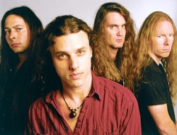
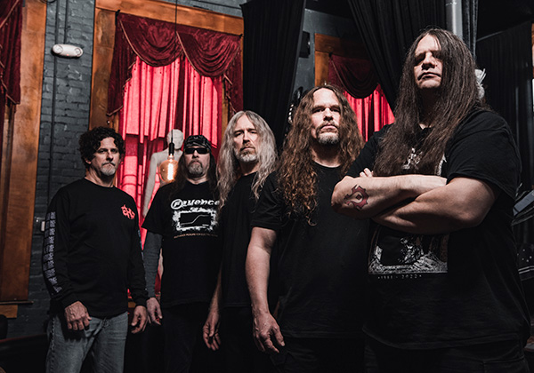
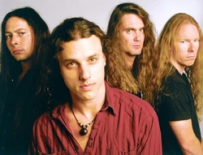
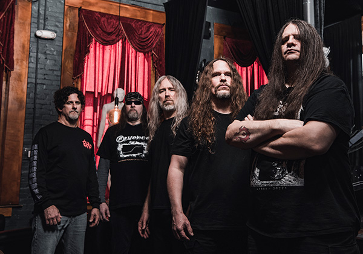
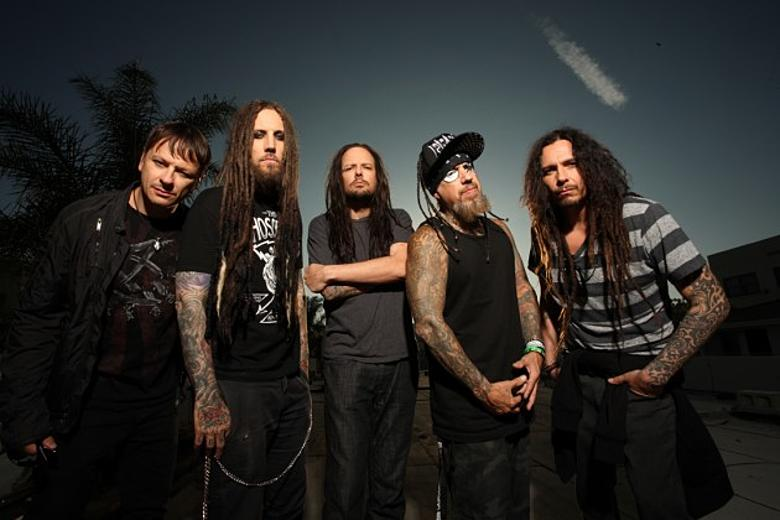
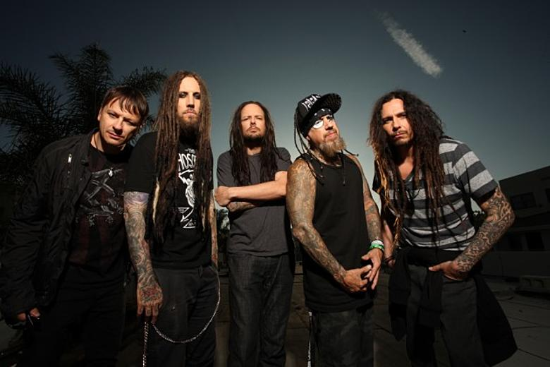

The History Of Heavy Metal
The Early 90's
Caution: You are about to enter the best decade of metal, ever. The 90s. The early 90s started strong with the release of Pantera’s debut album “Cowboys From Hell” Pantera, formed by the tragically now deceased Abbott brothers (Dimebag Darrell and Vinnie Paul), and led by frontman Phil Anselmo. This skill crushing album completely laid waste to the overwhelmingly glam filled metal genre of the late 80s. It was like a slap in the face to everyone to get back to heavier music like from the thrash era. Now that people’s eyes were back on heavier music, a genre started to form that took advantage of people’s newfound love for dark and twisted music, Death Metal. Led by bands like Cannibal Corpse, Death, and Dying Fetus, this subgenre quickly took over the genre. Over in Norway, Black Metal, famous for its Satanic lyrics, the church burnings associated with it, and bands like Mayhem, started to rise and seep into America as well.
 



Pantera
Death
Cannibal Corpse
The Late 90's
The late 90s, the golden age of metal, doesn't matter what anyone says. ANother genre entirely started to gain massive success in the late 90s, and that genre is rap. With people like Eminem and Snoop Dogg dominating the music industry, metal had begun to lose its spot in the public eye. So what metal did was somehow incorporate the ever growing craze of rap into its music. Behold: NUmetal. An exotic blend of hip hop and metal, rapping and screaming, and some of the best bands to ever exist. Some bands like Limp Bizkit decided that their frontman, Fred Durst, would be a rapper. Others like LInkin Park had a singer and a rapper (2 Frontmen), and the majority had a screamer that rapped a lot of the verses like in Slipknot. Bands like System Of A Down, KoRn, Slipknot, Deftones, Static-X, Linkin Park, and Disturbed, all made their debuts in 1997-1999 in what were truly the most fun and groundbreaking years for metal music, necessary in a time where it seemed a though the genre may die.
 


Linkin Park
KoRn
System Of A Down
NEXT DECADE